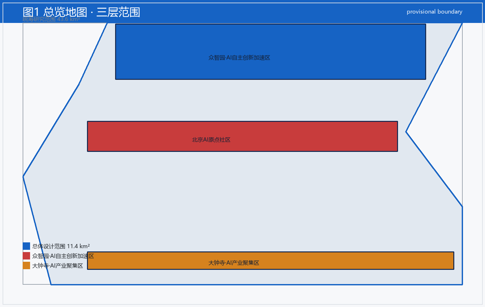
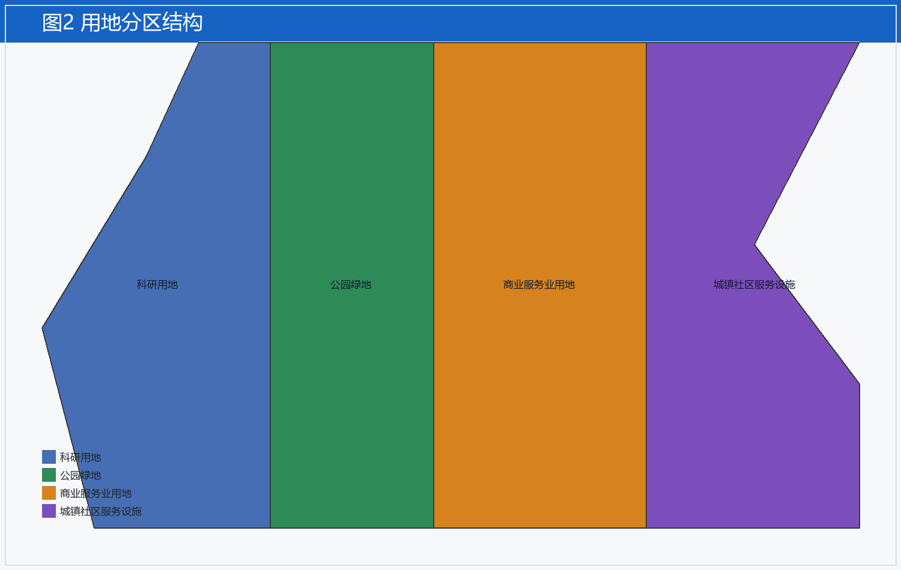
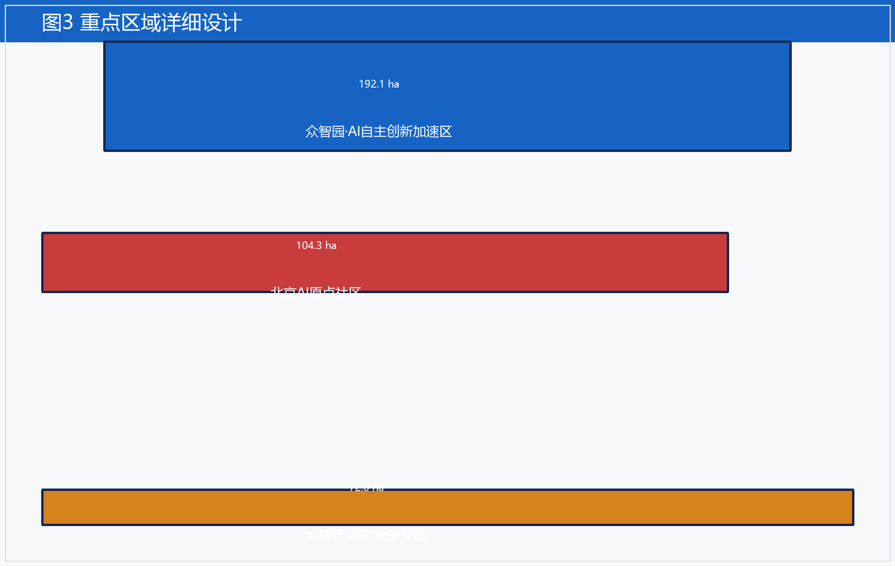
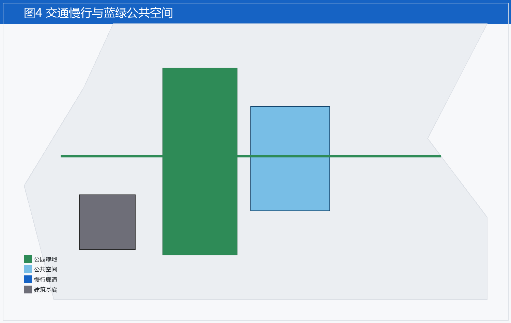
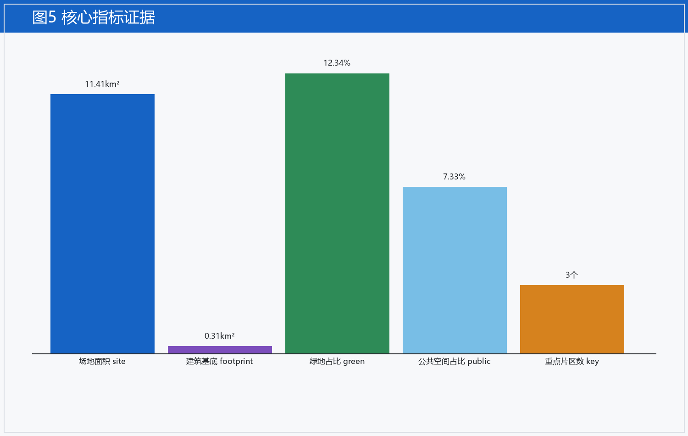

提案概要
京张智脉是面向百年京张AI创新带的城市设计概念提案，由 AI 智能体在临时边界基础上生成，供专业团队深化。
核心指标
| 指标 | 数值 |
|---|---|
| site_area_sqm | 11412825.386 |
| green_ratio | 0.123423 |
| public_space_ratio | 0.073281 |
| key_area_count | 3 |
说明
本页为可读渲染；完整叙述见 proposal.md / proposal.en.md。
图示




